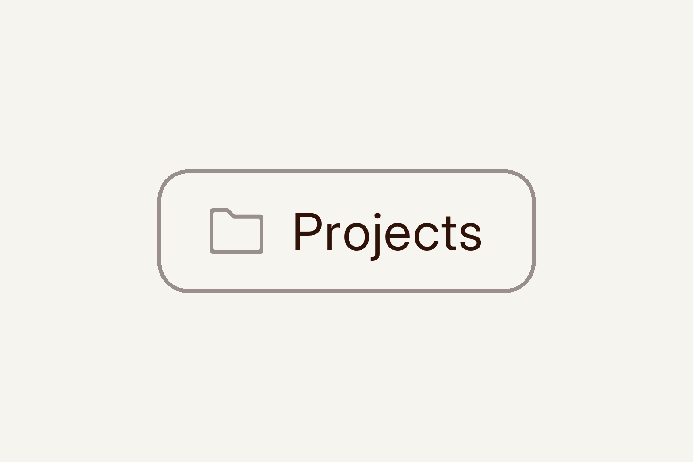

Designing an end-to-end journey produces far more than meeting notes. Strategy documents, Jira tickets, data analysis, user interviews, usability insights, design decisions, feedback from peer crits, iterations, tech feasibility, Slack messages... I put everything into Claude Projects.
It starts with Granola and Notes from discovery meetings, existing documentation, and a scan of any research already done. As the work moves on, I connect it with Statsig (other data platforms are available) and run through experiments, show it concepts, and work on strategy documents with it. At the end of each day, I dictate short notes with Wispr Flow. A skill I built summarises where things currently stand: where we've been and where we're heading next.
Over time it builds into a rich repository of the whole journey. I use it to validate concepts, pull out insights, and frame the journey's history for stakeholder meetings. It also helps me guide other designers, giving them a framework to follow for their own work. This approach was particularly useful on recent work around collecting and surfacing data, where I was testing with users how best to collect it and working out why we were collecting it in the first place. Now it's my memory for the work, and a work buddy I just keep feeding.